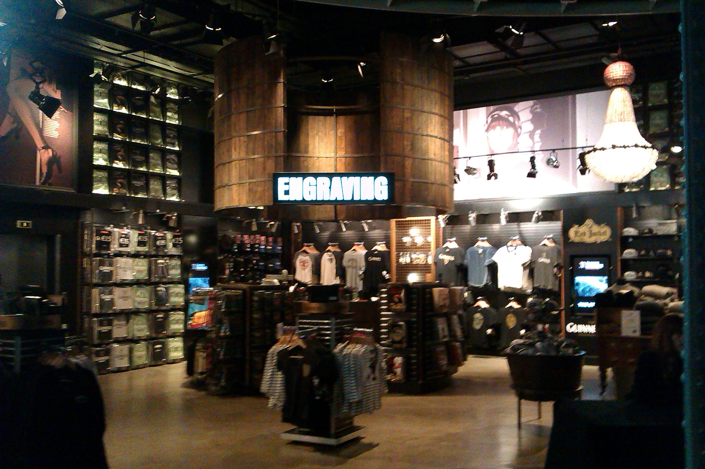

Web Summit Dublin 2014
Posted on 14/11/2014 by Jakub Langr
Posted in non-technical
So I rarely get this emotional about an event, but Web Summit definitely is an experience I will never forget. I was incredibly lucky to be selected as one of the 22 initial Student Scholars to give free attendance to Web Summit Dublin 2014. When I was applying little did I know how awesome this experience will be. When they told us that we were selected out of 6,600 applicants (final figure was apparently at 15,000 for all rounds), I was a bit skeptical. When I saw the list of people I was supposed to be going to the Summit with, my only thought was: "I don't belong here".
Once it got to term time I did not quite have the brain capacity to worry about this. But somehow, when it eventually got to the Summit itself, I was not sure what to expect. I did not know anyone from the group of scholars and even the arrangements from the Summit with regards to our arrival were very much in the start up mentality -- hectic and required some figuring out. (That is not to blame the team at all, everything that was supposed to work, worked.)
My 2 am bus ride to catch my 6 am flight was somewhat annoying, but hey, if it is to go such an amazing event, why not. Actually, it feels kind of boring to travel during regular hours. Already on the bus to the hotel, I met up with two other scholars and I immediately felt at home: super interesting people one of whom went to business school the other to medical school.
On the first day we did some serious sightseeing with those who arrived a bit early, as the first event was in the evening. Some people really wanted to go on the Hop On, Hop Off bus tour, which I though was quite touristy, but felt like I should try it.
 |  |
Definitely no regrets, we got to see a lot of Dublin that we normally would not have any time to see. Then it was time for our first pub crawl. These were integrated into Web Summit and there was even a special pub crawl for the scholars with some of the more successful companies at the Summit.
It comes as no surprise that the networking was awesome. But what is far more important: it felt really natural. I always hated networking for the sake of networking. I wanted to meet new people and make friends. And if they happen to be useful connections, great. If not, it's still a win, you have an awesome friend. That is really what made it so easy.
Then we were escorted to dinner at Guinness factory, where on the top floor some speakers (Drew Houston!!!) along with scholars were all having dinner. I think I even shook Drew's hand so that already made me quite happy. Plus I just casually happened to speak to the CEO of Idea Paint. Incredible.
After the dinner we moved to the Night Summit, which was a street rented out by Web Summit so that the attendees of the Summit can wind down and talk to each other over a pint. I think I came home at about 2 or 3 am.
|  |  |
The next day, it was start of the Summit's main part, which was absolutely mind-blowing. So many awesome start-ups to talk to, the picture above only barely describe my excitement when I saw the main exhibition hall. But also, there were about seven stages that were full of the super stars of tech community: Tim O'Reilly (sorry for the bad picture), Peter Thiel (I missed the book signing :( ), GitHub CTO and many others.
 |  |
The Night Summit made me happy to be missing sleep again. But we went to have drinks at the Lord Mayor of Dublin, which was amazing. Though at that time I was already spoiled, as earlier in the day we saw an opening of NASDAQ from Dublin by the Prime Minister of Ireland.
 |  |
Even the last day had so much to offer: Bono, Dana Burnetti and many others. Paddy Cosgrave the main organizer handled everything excellently, though he was pointing out the issues with WiFi and how that is not really their fault a bit too often. (Though to me that did not pose a problem.)
 |  |
This was also a week full of incredible occurrences: I randomly happened to speak to the founder of Twitch, without even knowing. One other scholar was just finishing his homework in the lobby of our hotel and happened to stumble upon Dave McClure -- the founder of 500 Start-ups -- the person who just a day earlier said on stage: "If you are going to pitch to my f*cking face [without being invited to], I am not going to listen to you". But at this time Dave was trying to set-up Node.js (framework that we all love) and my fellow scholar who happened to know Node got an internship offer for this one act of kindness.
 |  |
Other story that I still struggle to believe is that the Kooks happened to be playing without many people even knowing about it in one of the Night Summit venues. I only found out about that less than an hour before the show from a friend of mine when we just happened to be randomly talking about what we are doing tonight. He forwarded me an email (that already was forwarded at least 5 times) that was saying that Kooks will be playing in one of the venues. I don't think that it was that the organizers were trying to hide this event -- it's just that so much else awesome was going on.
Overall, words cannot describe how amazing this event was. I have learned so much from other Summit attendees, especially the scholars. I have had many interesting, fun and inspiring conversations. So if you are still in university, keep an eye out! Organizers promised they will do it again next year and you don't want to miss that!
Coding for GANS & (Semi)-Learning
Intro I'll jump straight into what we have explained on a high-level last time. The code is also available on
GANs & Semi-Supervised Learning
In my last blog post we looked what are some of the promising areas in AI and one of the areas that was mentioned many, many times by research
Artificially Intelligent Business
Lots of people are arguing about the theoretical nature of what AI means many years down the road, but I would like to focus on the AI commercial products in the next 2-5 years. I'd also bring
Comments